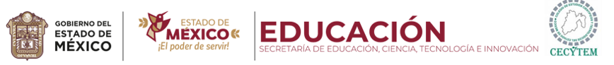

|  | |||
 |
|||
|
Fecha de Elaboracion: 12 de Abril de 2024. Hora:11:00 a.m.
El Colegio de Estudios Científicos y Tecnológicos del Estado de México (CECyTEM), es una institución de principios y valores que comparte la visión de que la educación dignifica a las personas y es el motor del crecimiento económico y social.
El CECyTEM brinda servicios educativos de nivel medio superior, con el propósito de que nuestros estudiantes desarrollen sus capacidades científicas y tecnológicas. Desde su creación en 1994, ha seguido un proceso de fortalecimiento y mejora continua, a la fecha contamos con 60 planteles ubicados estratégicamente en nuestra entidad.
Nuestros planes de estudio de carácter bivalente, abren la posibilidad de que los egresados cuenten con educación tecnológica terminal que les permita incorporarse a una actividad productiva, o bien, continuar sus estudios de nivel superior.
Con firme decisión enfrentamos los retos actuales: Elevar la calidad educativa, ampliar la cobertura social y territorial, innovar y diversificar la oferta educativa y promover la vinculación escuela-empresa para fortalecer la empleabilidad de nuestros estudiantes.
Te invitamos a formar parte de nuestra comunidad estudiantil para construir un Estado de México más fuerte.
 |
|||
 Todos los derechos reservados. Elaborado por: José Antonio Cruz Gutiérrez. Tel: 7121171425. E-Mail: celia@gmail.com.mx. Página web: http://www.educacion.mx Domicilio conocido S/N. Prohibido su reproducción total o parcial. Para un óptimo funcionamiento utilizar navegador Google Chrome y resolución de 1024. |
|||